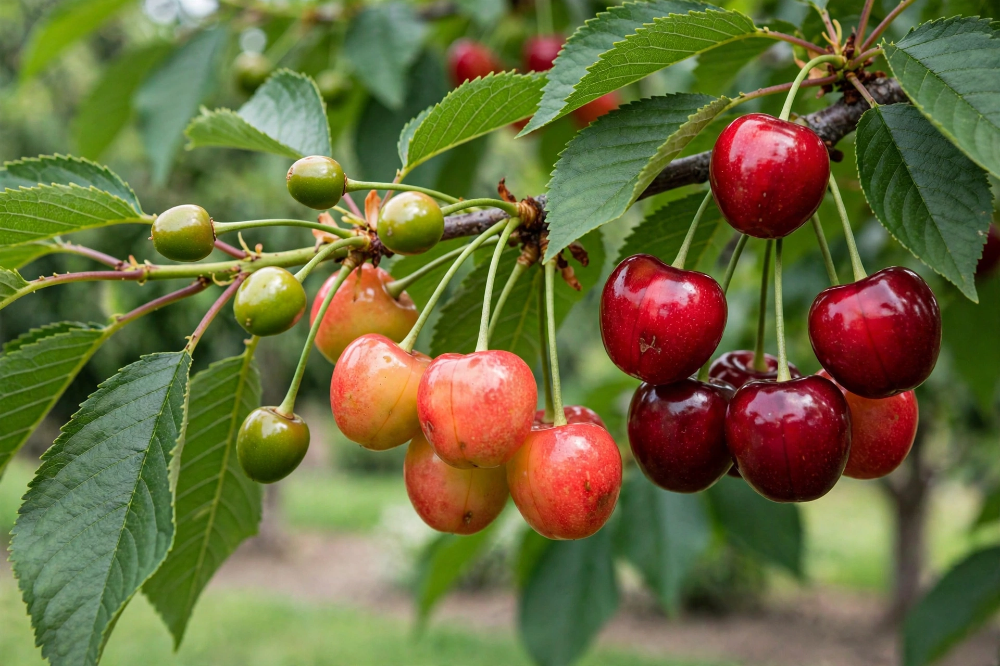

Prunus avium, commonly called sweet cherry, wild cherry, bird cherry, or gean, is a species of cherry native to Europe, Anatolia, the Maghreb, and western Asia. It is the ancestor of most cultivated sweet-cherry varieties.
It is a deciduous tree reaching 15–32 m tall, with white flowers in corymbs in spring and red to dark-purple drupes 1–2 cm across, eaten by birds — hence avium, “of the birds.”
Cultivars such as Bing, Rainier, and Stella are grown worldwide for fresh fruit. The hard, reddish-brown timber, marketed as cherrywood, is valued for furniture and musical instruments. See cherry blossom.
The tree is an ancestor, together with Prunus cerasus parentage lines, of many orchard cherries, and requires cross-pollination in most cultivars.